Dialogs of MarvinSketch
Contents
The Preferences dialog window is located at the Edit menu.
It allows you to change many of the MarvinSketch display settings, including look & feel, error highlighting, and object visibility.
All settings are saved and used when the application is restarted.
Display
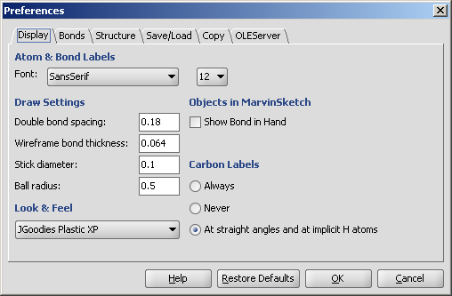
- Atom & Bond labels are used as the default font type and size to labels
such as C/T label of bonds, atom query property labels of atoms, etc.
- Double bond spacing is a gap between two lines/sticks representing a double or triple bond measured in Angstroms.
- Wireframe bond thickness is the width of bonds in wireframe mode. It is measured in Angstroms.
- Stick diameter is the width of bonds in stick mode in Angstroms.
- Ball radius is the size of atom spheres in Ball draw type, measured in Angstroms.
- Look & Feel allows changing the visual appearance of GUI components.
The available options are: Java Metal, Motif, JGoodies Plastic, JGoodies Plastic XP,
and the native Look & Feels (Windows, Aqua) based on the underlying operating system.
- Show Bond in Hand when checked bond types are shown under the mouse cursor like template structures.
- Carbon Labels options determine the condition of displaying C labels on Carbon atoms.
 |
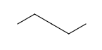 |
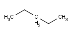 |
| Always | Never | At straight angles
and implicit H atoms |
Bonds
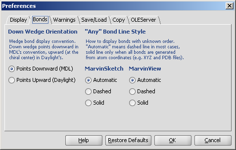
- Down Wedge Orientation allows changing the wedge bond display convention.
Down wedge points downward in MDL's convention, upward (at the chiral center) in Daylight's.
- Any Bond Line Style offers three different modes to display bonds of unkown types: Automatic, Dashed and Solid.
This option can be separately set to be used in MarvinSketch and MarvinView.
Warnings
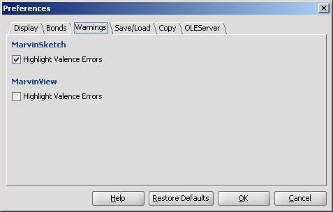
- Highlighting Valence Errors highlights atoms having wrong valences with red underline when it is checked.
Save/Load
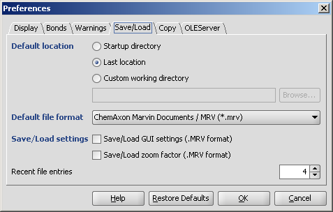
- Default location: the folder from which to load or to save molecules may be set by the user.
- Startup directory: the folder where the command to start the application was given.
- Last location: the last folder used for opening or saving a structure.
- Custom working directory: a user-defined folder. If
a molecule is loaded from another folder, then the file's location will be offered for saving.
- Default file format determines which type is offered by default when structures are saved to file.
- Save/Load settings
- Save/Load GUI settings (.MRV format) allows storing and loading
parameters like background color, font type, etc. beside the structures.
This option can only be used with the
MRV format.
- Save/Load zoom factor (.MRV format) stores and loads the
zooming scale of the structures.
This option can only be used with the MRV format.
- Recent file entries defines the number of files in the Recent files list in the File menu,
with values between 1 and 10.
Copy
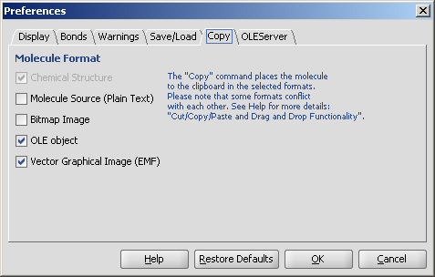
- Copy molecule as
This panel offers additional formats in which structure data can be put to clipboard.
This can be useful for example when you wish to insert the image of the molecule to
an image editor application, which would not recognize the input data without enabling image formats.
Please visit Cut/Copy/Paste and Drag & Drop Functionality for more details.
OLEServer
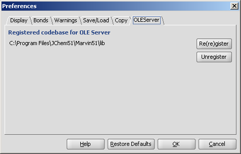
- Re(re)gister and Unregister
Enables or disables the OLE functionality. This option is only available on
desktop and integrated applications in Windows environment.
Read more about this feature.
You can alter a molecule by directly editing its source in the Edit Source dialog window.
The dialog window provides standard clipboard operations and it is also possible to send the source text to the console.
You can view and edit the source in any of the supported file formats.
You can also convert it to Java String which allows easy integration of the structure to a custom Java application code.
To change the format of the source, simply select the desired one from the View
Menu. After editing the source text, you can send the structure back to the
MarvinSketch canvas by invoking File >
Import As, and pressing Import on the appearing dialog window. This will close the Edit Source dialog window.
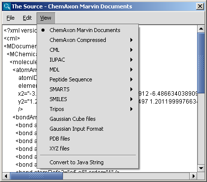
Atoms and Bonds
On this panel there are many options to change the drawing properties of atoms and bonds.
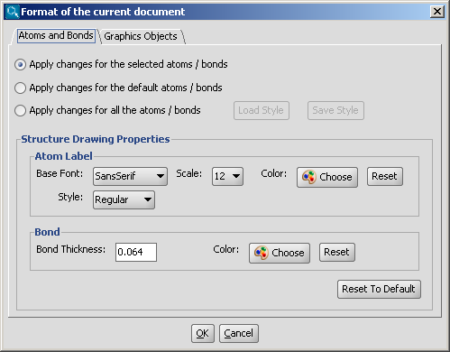
For more information about using structure drawing styles, please
visit this link.
Graphics Objects
The drawing properties of graphics objects (text boxes, brackets, lines, etc.) can be changed on this panel.
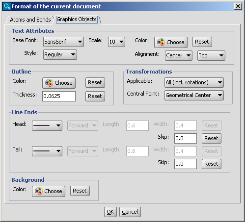
Periodic Table
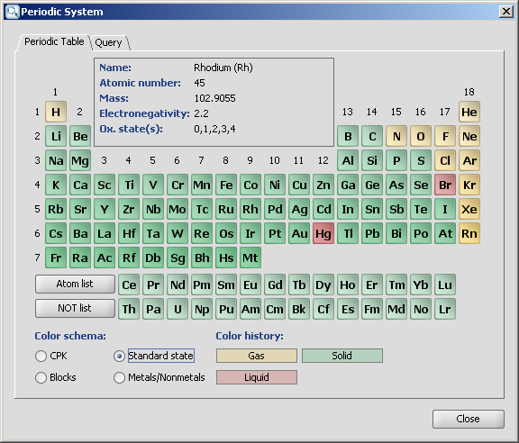
Chemical elements are available as buttons on the Periodic Table panel of MarvinSketch.
Atom buttons are arranged acoording to the standard periodic table layout.
When the mouse cursor is over a specific atom button, the information panel displays
the name of the atom, the atomic number, mass, electronegativity and the oxidation states.
When one of the atom buttons is pressed, the corresponding atom can be placed on the canvas.
The atom symbol appears under the mouse cursor, while the button is highlighted in this case.
The Atom List and NOT List buttons can be used to create special atom lists that can be used in queries.
When one of these buttons is pressed, atoms can be added to the list by pressing atom buttons one after the other.
The lists are not cleared when the list buttons become unselected.
The atoms of the list are also shown under the mouse cursor above the canvas.
See Query Guide
for more details about atom lists and not lists.
Four different coloring schemas can be chosen:
- CPK: colors the atoms according to the Corey-Pauling-Kultun coloring scheme
- Standard state: colors according to the standard state of the element (gas, liquid, solid)
- Blocks: colors elements according to the highest-energy electron's orbital (s-, p-, d- or f-block)
- Metals/Nonmetals: colors according to the metallic character of the elements
(alkali, alkaline earth, metalloid, transition metal, other metal, nonmetal)
Query
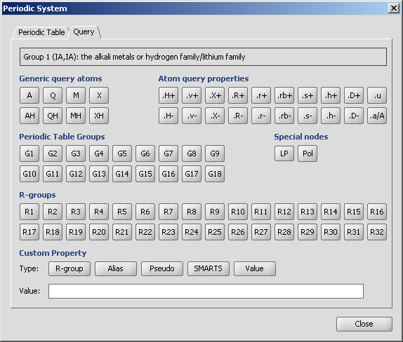
For the meanings of the buttons on the Query tab please refer to the Query Guide.
When the mouse cursor is over a button, a short description appears on the information panel.
- Generic query atoms: any atom, any hetero atom, any metal, any halogen
- Atom query properties
- H<n>: Total number of hydrogen substituents
- v<n>: Valence - total bond orders
- X<n>: Number of connections
- R<n>: Ring count
- r<n>: Smallest ring size
- rb<n>: Ring bond count
- s<n>: Substitution count
- h<n>: Number of implicit hydrogens
- D<n>: Number of explicit connections
- u: Unsaturated atom
- a/A: Aromatic/Aliphatic atom
- Periodic Table Groups
- Special nodes
- R-groups
- Custom Property
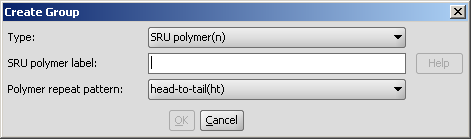
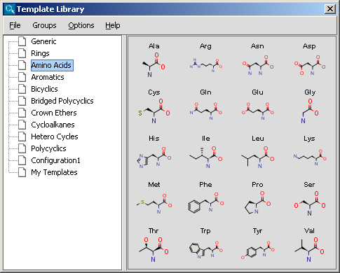

You can set the number of horizontal and vertical pages in the Document Grid part,
and you can also define the title, the page size and the margins in the corresponding
sections of this dialog window.